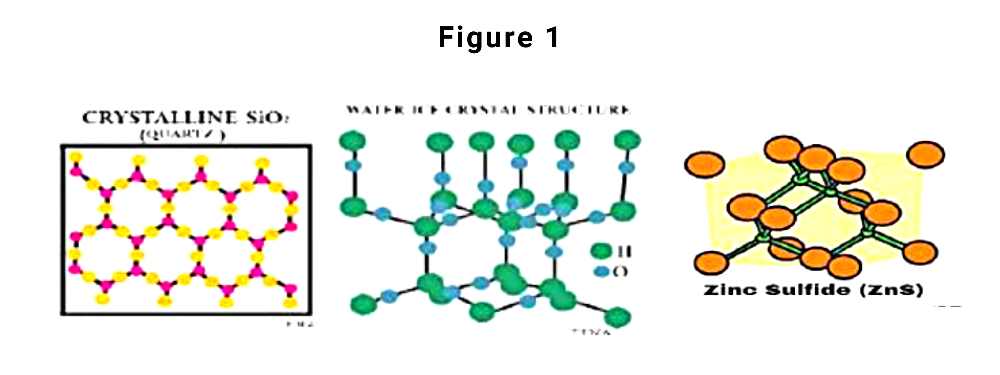
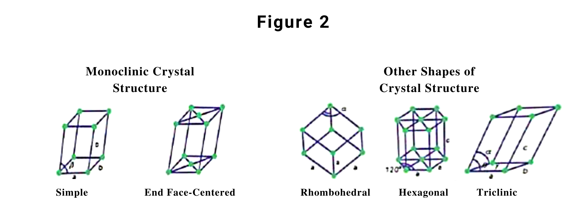
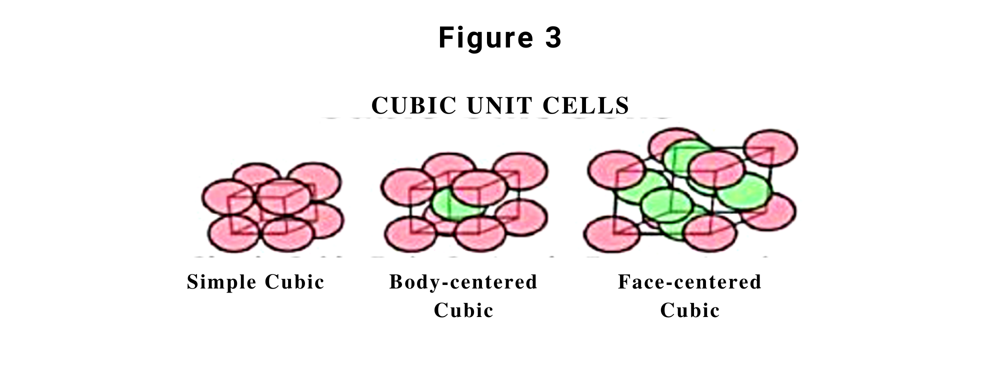
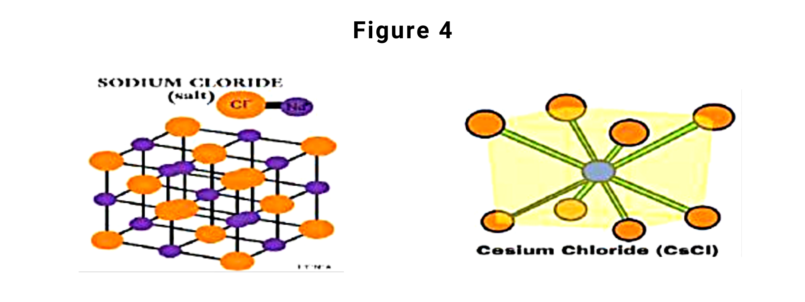
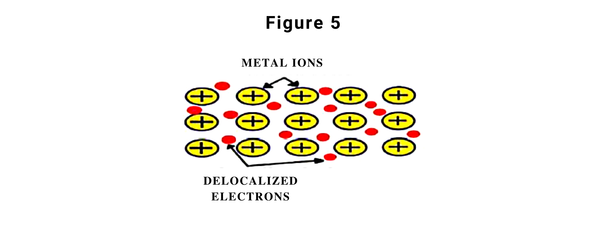
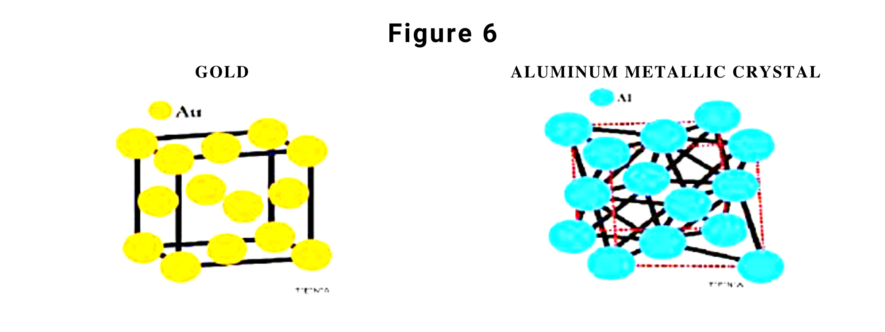
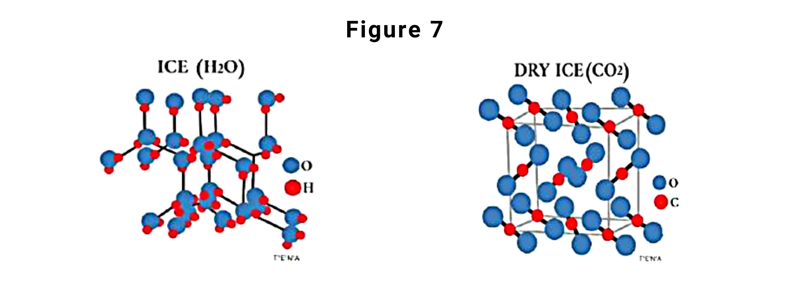
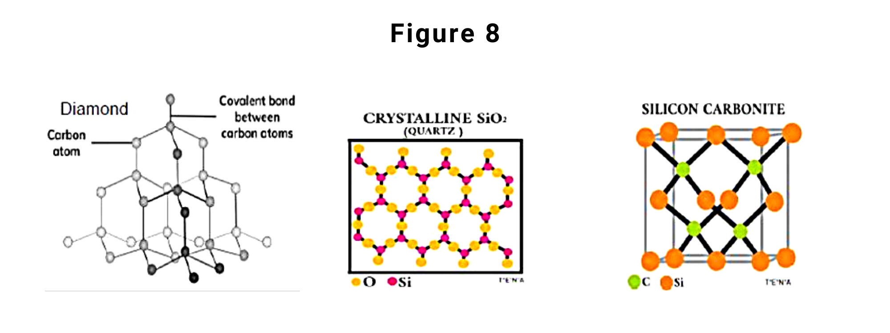
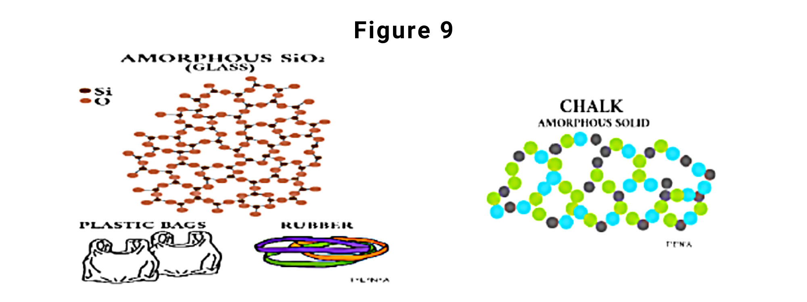

Lesson #3: STRUCTURE OF CRYSTALLINE AND AMORPHOUS SOLIDS
Classes of Solids
A. Crystalline Solids
Crystalline solids are composed of a huge number of small crystals with a definite geometrical shape that makes them rigid and incompressible. A repeated pattern of arrangement of particles is indicated with the long-range order of crystals which is shown in the following examples in figure 1.
Crystalline solids are considered true solids because of their sharp melting point that once they reach this point they will immediately change into liquid form. They also have a definite heat of fusion. The amount of heat absorbed by a unit mass of a given solid at its melting point has the capability to convert the solid crystal into a liquid.
Properties of Crystalline Solids
- Unit cell
- Stable crystal structure due to intermolecular forces
- Types of crystals
The unit cell of crystals is the basic repeating structural unit of crystalline solids. Atoms or molecules are represented by each sphere and are called a lattice point that is identically arranged. This arrangement of each lattice point occupied by an atom is the case of most metals. Figure 2 shows the shapes of crystal structure.
The way how the spheres are arranged in layers is shown in figure 3. Another thing to consider is that crystalline solids show a plane of symmetry.
Each crystal of crystalline solids has a well-defined ordered structure in three dimensions. Their geometric shape is being fixed by the net attractive intermolecular forces. Ionic forces, covalent bonds, London dispersion forces, hydrogen forces, or the combination of all these forces help the stability of the crystals.
Remember that the structure and properties of crystals (melting point, density, and hardness) are determined by the types of intermolecular forces that hold the particles together. And once these forces are broken, these crystals become liquid at a specific temperature. Right now we will tackle types of crystalline solids.
- a. Ionic crystals
- b. Metallic crystals
- c. Molecular crystals
- d. Covalent crystals
From its name ionic crystal, they are composed of charged particles where the exact arrangement of ions in a lattice varies according to the size of the ions in the crystals. Since they are composed of ions, therefore the built electrostatic interaction is strong. Will this crystal be characterized as hard solids? Yes, the numerous electrostatic attractions extend throughout the crystal making the crystals hard. Also, since they are hard crystals their melting points are high, and once they melt and turn into liquid state they become good conductors.
Why solid-state and molten state crystals in this type are poor electrical conductors? Since they are held firmly and no large space for the ions to move around this is the cause of making them as non-conductors of electricity.
Ionic crystals are brittle once they are deformed that cause the attractive forces to be broken. Examples of these types of ionic crystals are the following compounds in figure 4.
This type of crystals are held together by electrostatic force between cations and delocalized electrons. Figure 5 shows that the electrons are weakly attached to the metal atoms. These weakly bound electrons are called delocalized electrons that can freely room across the entire metal. Making this type of crystal a good conductor of electricity and heat, the particles can move freely through the crystals and cause the transfer of the kinetic energy.
Another is that this type of crystals is dense where the atoms are closely packed making the attractions strong leading to a high melting point. Also, this type of crystals is lustrous, meaning they easily absorb and emit light.
Lastly, they are malleable because the atoms can roll over each other into new positions without breaking the metallic bond. Examples of such crystals are gold, aluminum, iron metals, and metallic alloys (steel, brass, and bronze). Figure 6 shows the structure of some metallic crystals.
This is a type of crystalline solids where the lattice points are occupied by molecules and the attractive force built between the molecules is London dispersion interaction or hydrogen bond. Their molecules are packed closely as their size and shape allow. The three-dimensional lattice brought by hydrogen bonds is seen in ice molecules. In sulfur dioxide (SO2) molecules the predominant attractive force is dipole-dipole. Other examples of molecular crystals are iodine (I2), naphthalene (C10H8), and sugar (C12H22O11). An example of structure under this type of crystals is given in figure 7.
The presence of London dispersion interaction and hydrogen bond would mean that there are weak intermolecular forces between the molecules. Therefore, most of the molecular crystals have low melting points at temperatures below 100°C.
It is said and proven that a property of molecular crystals is soft and brittle. They are also poor electrical conductors in solid and molten states because of the absence of delocalized electrons.
The atoms in this type of crystals are bonded covalently. Since they are bonded covalently, strong intermolecular forces are present that lead to these molecules to have a very high melting point. And because of the strength of the forces, there will be no available charged particles to move through the crystals making it a poor conductor of electricity.
The atoms of this type of crystal can be made of one type of atom, like in the case of diamond and graphite as plain carbon atoms. Others can be made up of different atoms such as silicon carbide and quartz. Figure 8 shows examples of crystals under this type.
Amorphous Solids
This type of solids has a structure that lacks a well-defined shape or regular three-dimensional arrangement of atoms. They are considered pseudo-solids or super cooled liquids because they can be molded and blown into various shapes and behave as crystalline at a certain temperature. Glass is the most versatile material of amorphous solid and is sometimes called supercooled liquid. If we say supercooled liquid (liquids that have a temperature lower than its freezing point and that has not solidified). When a glass object shatters, it does so in a very irregular way because its atoms do not align themselves or it does not have a plane of symmetry and have physical properties in all directions, not like crystalline solids that have regular planes of cleavage.
Aside from glass we also have gels, rubber, plastics, various polymers, wax, thin films as good examples of amorphous solids. Amorphous silicon is a photovoltaic material that is responsible for converting sunlight into electrical energy. Some naturally occurring amorphous solids have impurities and so this will let the solid to have a short-order of arrangement of molecules.
In terms of their melting points, they do not have sharp melting points since they have intermolecular forces weaker than those in crystalline solids. Meaning, different amounts of thermal energy are needed to overcome these different interactions. Thus, these solids tend to soften slowly over a wide temperature range rather than having a well-defined melting point like a crystalline solid. Figure 9 shows the structures of chalk and glass.
